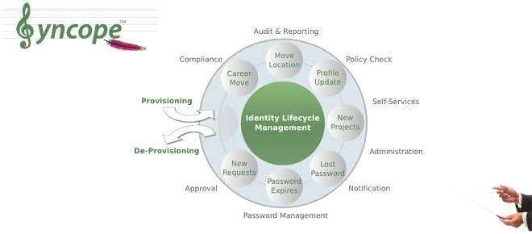
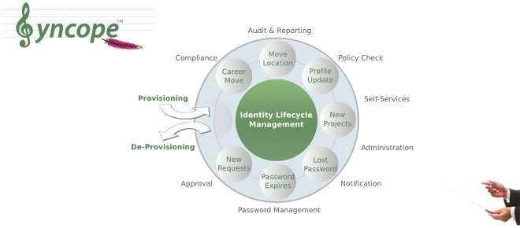

News

Rilasciato 1.2.1 (Intermezzo)
Disponibile la prima maintenance release di Apache Syncope 1.2
21 nov 2014
Rilasciato 1.2.0 (Intermezzo)
Disponibile la nuova major release di Apache Syncope
07 ott 2014
Rilasciato 1.2.0-M1 (Intermezzo)
La nuova versione di Apache Syncope è in arrivo
12 set 2014
 



Un cloud Syncope in pochi secondi
Dopo i primi incoraggianti risultati, il team di Tirasa ha rilasciato un bundle completo di Syncope per l'utilizzo con Juju, la piattaforma cloud di Canonical, presente ufficialmente nel Juju charm store.
L'immediata disponibilità di un bundle per Apache Syncope riduce grandemente la durata del processo di valutazione e facilita l'adozione. Con l'aiuto di questa ulteriore modalità di accesso all'Identity Management Open Source, contiamo di incrementare le installazioni di Apache Syncope in tutti gli ambienti.
Maggiori dettagli nell'annuncio ufficiale di Canonical.
Bookmarks
About this site
This is Tirasa support site for Apache Syncope, an Open Source Identity Manager at the Apache Software Foundation (ASF). Tirasa is an Open Source company providing value add support and professional services around Apache Syncope. Discover more.